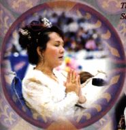

| Reportages spéciaux |
(Initialement en anglais) |
Pendant que le monde attendait anxieusement la venue du nouveau millénaire, et avec la gracieuse permission de Maître, une cérémonie pour la célébration du millénaire ainsi qu'une retraite de sept jours ont été organisées à Bangkok en Thaïlande du 27 décembre 1999 au 2 janvier 2000. Des milliers d'amis initiés et des invités du monde entier se sont rassemblés pour assister à la retraite et pour célébrer dans la joie la venue du nouveau millénaire. Durant cette période, beaucoup de nouveau initiés adultes et enfants sont "nés" dans la grande famille Guan Yin.
La retraite a eu lieu dans le complexe sportif de Rangsit dépendant de l'Université de Thammasat à Bangkok (endroit où ont eu lieu les Jeux Asiatiques de 1998). Le complexe présente de vastes commodités et est bâti dans le style d'un village olympique équipé de nombreux stades et de zones résidentielles pour les athlètes.
Le hall central destiné à la méditation était situé dans un immense stade. Grâce aux grands efforts de l'équipe de travail de la retraite, la scène était décorée d'une magnifique réplique multicolore du palais royal Thaï, surmontée d'une inscription : "2000 - l'Age d'Or vous salue". En même temps, de nombreuses banderoles sur lesquelles figuraient des logos en forme de "coeur an 2000" étaient suspendues dans le stade. Chaque jour durant la retraite, plusieurs séances de méditation ont eu lieu, et Maître venait fréquemment méditer ou parler avec nous.
Dans un autre stade situé près du hall de méditation, il y avait une salle d'exposition, des bureaux d'information sur la pratique spirituelle, une zone destinée aux livres, aux expositions des Vêtements et des Bijoux Célestes, ainsi que d'autres stands. Puisqu'il y avait beaucoup de place et qu'une grande énergie circulait à travers les lieux, une estrade avait été aussi prévue dans ce stade de sorte que Maître durant la retraite puisse y rencontrer par petits groupes des initiés du monde entier.
Nous étions enchantés que Maître soit venue méditer avec nous durant la première session de la retraite. Durant l'après-midi, lorsqu'Elle s'est réunie à nouveau avec les initiés, Elle nous a parlé du meilleur moment pour méditer, et a suggéré de ne pas attendre d'être fatigués au point de s'écrouler. Elle a dit : " Essayez de méditer lorsque vous avez encore un peu d'énergie de réserve de sorte que vous puissiez recharger vos batteries. Votre corps est comme une voiture, si la batterie a encore un peu d'énergie, vous pouvez la recharger en faisant rouler votre voiture ou vous pouvez faire tourner le moteur de la voiture et la recharger. Mais si la batterie est complètement "kaput" à un point tel que la voiture ne peut même pas démarrer, alors vous devez aller chercher une nouvelle batterie ou une autre voiture pour la recharger. C'est vraiment fatigant et cela prend longtemps. "
Durant Sa réunion avec les initiés de la Chine Continentale, Maître a remarqué qu'il y avait de très bons pratiquants qui avaient choisi de vivre dans un environnement difficile pour pouvoir progresser rapidement. Maître a dit que même si Elle enseignait à seulement un chinois, tous les autres chinois en tireraient des bénéfices à cause des relations de sang qui existaient entre eux. Maître a donné un exemple : lorsqu'Elle était en train de parler dans la salle d'exposition, l'équipe de travail pouvait faire en sorte que tous les autres initiés dans la hall de méditation puissent La voir et L'entendre et cela en pressant sur un seul bouton. Elle a demandé alors : si une simple machine mécanique pouvait remplir une telle fonction, comment une relation de sang en ligne directe avec Dieu ne pourrait-elle pas faire beaucoup plus ? Maître a continué en citant un article d'un journal récent au sujet d'un laboratoire aux Etats-Unis dans lequel on avait appris à plusieurs singes à boire à la tasse. On a découvert après que d'autres espèces similaires de singes vivant très loin de là en Afrique étaient aussi capables de boire à la tasse. Maître a fait remarquer que même les singes sont capables de communiquer de coeur à coeur sur de très longues distances, et que les êtres humains ne pouvaient pas leur être inférieurs. Ainsi, beaucoup d'amis initiés ont connu l'expérience de Maître prenant soin de chacun d'entre nous invisiblement. Peu importe s'ils se conforment ou Lui résistent, Elle prend soin de chacun en particulier. De plus, elle prend soin de chaque personne qui se souvient d'Elle ou pense à Elle, ou qui est reliée à un ami pratiquant.
Ce soir-là, durant la session de questions-réponses, une disciple occidentale a raconté qu'elle avait connu une période d'environ un mois et demi durant laquelle elle s'était sentie comme étant dans les nuages. Elle se sentait très libre, ne ressentait désormais plus de colère ou de tristesse, et ne pouvait plus comprendre les sentiments des autres. Maître a répondu que c'était une sorte de méditation et qu'elle était entrée dans une autre dimension d'existence. Son corps physique était là, mais ses sentiments étaient ailleurs, c'est pour cela qu'elle ne ressentait plus ce que les autres ressentaient. Maître a fait remarquer que cela arrive à beaucoup de pratiquants spirituels, même à Elle-même, et l'a encouragée à se réjouir qu'elle ait connu au moins une fois ce genre d'expérience qui est aussi appelée "le vide de l'existence", bien que ceci ne soit pas l'état le plus haut. Maître a souligné que l'état le plus élevé est très "normal", expliquant que les pratiquants spirituels sont les personnes les plus normales du monde. Beaucoup de gens qui ne pratiquent pas paraissent humains, mais en fait, ne sont pas normaux. C'est pourquoi Jésus a dit : " Laissez le mort enterrer le mort. " Après que vous ayez été éveillés par l'initiation, alors vous commencez à être vivants, à renaître, et alors vous commencez votre croissance et devenez un être humain tout à fait normal, un saint. Vous connaissez en même temps une existence céleste et une existence humaine. Alors Maître a conclut : " La plupart des gens, avant de pratiquer, sont seulement des êtres humains, pas des humains normaux, mais ils existent seulement dans la dimension physique. Ils ne connaissent rien du monde spirituel. Ils peuvent ressentir tout ce qui concerne l'existence humaine, mais ils ne ressentent rien en ce qui concerne les cieux. Après avoir quelque peu pratiqué, ils ressentent juste une existence céleste, comme vous l'avez ressentie. Ils ne ressentent plus l'existence humaine, même s'ils vivent ici. Alors, après, et à un niveau supérieur à celui-là, ils ont en même temps des sentiments humains et une existence céleste. C'est cela l'état de perfection. "
Maître nous sert des céréales. |
Pendant la retraite Maître méditait souvent avec nous et chantait les Saints Noms. Durant une séance en soirée, Maître a demandé aux initiés de chanter avec Elle "Alléluia au Seigneur" ainsi que "Louange au Boddhisatva Guan Yin". Profondément touchés par la dévotion de Maître et Son amour sans limites, nous avons chanté de tout notre coeur. Certains initiés étaient tellement émus qu'ils ne pouvaient pas retenir leurs larmes. Le chant était si sincère et harmonieux qu'il semblait tout purifier, même notre mental et l'atmosphère du monde. On pouvait ressentir une magnifique vibration dans l'air, et à ce moment-là c'était comme le paradis sur Terre. Après avoir chanté, Maître a murmuré : " Vous avez magnifiquement chanté. "
Durant les pauses, Maître se promenait souvent parmi nous, bénissant chacun. Elle prenait aussi le petit déjeuner avec nous presque chaque jour, tandis que durant la journée, Elle continuait à rencontrer des invités et des initiés par petits groupes, répondant aux questions et distribuant de la nourriture bénie. Tous les participants à la retraite se sentaient vraiment paisibles, joyeux et gais durant ces journées. C'était vraiment comme ce que Maître a dit : " C'est le paradis. "
Le 29 décembre, alors qu'Elle répondait à la question d'un frère initié qui demandait comment se protéger lui-même des liens karmiques avec ses patients malades, Maître lui a conseillé, de non seulement répéter les Saints Noms, mais aussi de se laver avec du citron car cela coupe les connexions énergétiques et psychiques. Elle a expliqué qu'à la fin de la journée ou quand il en ressent le besoin, qu'il doit se laver avec beaucoup d'eau additionnée de quelques gouttes de citron et du sel, Elle a aussi indiqué que secouer vigoureusement ses mains au moins sept fois aiderait aussi à rompre toutes les connections psychiques.
Durant l'après-midi et la soirée du 30 décembre, Maître a continué à voir les initiés occidentaux. Pendant la séance de questions et réponses, Maître a souligné que certains défauts subtils cachés de notre personnalité se révélaient seulement dans certaines situations. Par exemple, en temps normal, nous ne nous sentons pas jalouses des belles femmes, mais si notre petit ami porte attention à une autre femme, nous pouvons nous sentir jalouses. Avant cela, nous ne réalisions même pas que nous possédions ce sentiment de jalousie, mais cette situation nous sert à en prendre conscience. Maître a dit que tant que nous reconnaissons que nous avons certains défauts, nous ne devrions pas nous sentir mal à leur sujet. Une fois que nous reconnaissons quelque chose, le mal est presque soigné.
Plus tard, en répondant à la question d'un initié sur la manière de faire face à nos mauvaises habitudes, Maître a donné une autre réponse excellente sur le même sujet en spécifiant : " Vous n'êtes pas mauvais. C'est votre cerveau, votre ordinateur, qui enregistre toutes ces choses et les repasse à nouveau. " Elle nous a mis en garde de ne jamais nous identifier à ces mauvaises habitudes, expliquant que c'est seulement nos habitudes acquises qui sont mauvaises, et celles-ci proviennent de nos relations avec de mauvaises personnes ou de notre présence dans un environnement négatif. Par exemple, si nous entrons dans une poissonnerie, même si nous n'achetons rien, il suffit que les gens nous touchent ou se frottent un peu à nous pour que nous sentions le poisson. C'est tout cela que nous appelons "le mauvais moi."
Elle nous a prévenu de ne pas nous faire des reproches, mais de nous débarrasser simplement, une à une, de ces mauvaises habitudes à chaque fois que nous le pouvons. Tout en nous encourageant, Maître a souligné que nous sommes déjà très biens : " Vous ne pouvez pas actuellement faire du mal à une chose vivante, pas même à une fourmi. Vous êtes si gentils, comme un ange qui se promène. " Aussi longtemps que nous suivons les instructions qui nous ont été donnés au moment de l'initiation et que nous méditons chaque jour pour nourrir notre âme, c'est tout ce que nous pouvons faire, le reste est juste la surface. Utilisant la nature par analogie, Elle a fait remarquer que l'océan n'a pas de vagues, les vagues proviennent du vent et de la rotation de la planète. " Vous êtes l'océan, qui est toujours calme et magnifique. Tant que l'océan existera sur cette planète, il y aura toujours des vagues. Vous découvrirez toujours quelque chose qui n'est pas vous, que vous avez simplement enregistré. Vous ne serez jamais, jamais autre chose que beauté pure et lumière. C'est ce que vous devez savoir au sujet de Vous-Même. Un jour vous réaliserez que vous êtes vraiment, vraiment parfaits. Même si vous faites quelque chose de mal, c'est aussi parfait å parfaitement mal ! " (Rires de Maître et de toute l'assistance.) Maître a continué : " Mais c'est juste la chose qui est mauvaise. Peut-être que même ces choses mauvaises ont une signification, pour que quelque chose d'autre apparaisse. Parfois il vous faut passer par des situations appelées "mauvaises" pour rencontrer la personne adéquate ou la chose adéquate. C'est vraiment comme cela. Ainsi, remettez-vous dans les mains de Dieu. Faites de votre mieux. C'est tout. Ne vous condamnez pas, ne pensez jamais quelque chose de mauvais à votre sujet parce que vous êtes Dieu. Il s'agit simplement de mauvaises habitudes, si vous ne les aimez pas, débarrassez-vous en ! " (Applaudissements)
Un frère a raconté une expérience durant la méditation : il alla dans une grande cité avec de l'herbe, des cascades, des collines et des maisons blanches où il découvrit que les bancs du parc étaient des plantes vivantes. Lorsqu'il demanda à Maître la signification de cette expérience, Elle a répondu : " Les cités célestes sont comme cela, les choses célestes sont pleines de vie, très vivantes, les nuages, les tables, tout est vivant et vous pouvez leur parler. Ce n'est pas comme ici. (Maître toque sur la table se trouvant en face d'Elle). Là-dedans aussi il y a de la vie, mais nous ne pouvons pas la voir. A l'heure actuelle, les scientifiques ont prouvé que toutes ces choses-là sont vivantes, mais nous ne pouvons pas le voir à l'oeil nu. Lorsque nous sommes dans les dimensions célestes, nous pouvons voir toutes ces choses très clairement. C'est pourquoi nous appelons cela "le monde réel." Le monde d'ici n'est pas réel parce que tout ce que nous voyons ici n'est pas réellement ce qu'il est. Les yeux nous déçoivent. Nous voyons la table, les pierres, comme mortes, comme quelque chose qui tient debout, mais qui ne tient pas. Dans le monde réel, tout apparaît exactement comme il est. C'est pour cela que nous l'appelons "réel" et que nous disons que ce qui est ici bas est une illusion. Tout ce qui est ici nous trompe. "
Maître lui a dit : " Vous avez eu juste un aperçu d'une des cités du monde réel. J'ai mentionné que lorsque vous voyagez vers le paradis, vous passez par différents lieux. Nous mentionnons seulement quelques uns de ces paysages durant l'initiation, mais vous verrez beaucoup d'autres de ces choses. Où que vous alliez, vous les verrez et c'est encore plus magnifiques qu'ici. Les maisons sont suspendues dans les airs, et toutes sortes de choses comme cela. Il n'y a pas besoin de structure, pas besoin de supports, et tout est vivant. Vous pouvez parler à tout, et vous ne vous sentez jamais seuls même si vous êtes seuls. Ici, vous vous sentez seuls même si vous êtes dans la foule, parce que vous ne pouvez pas communiquer les uns avec les autres en utilisant des connexions intérieurs. Nous devons parler plusieurs langues et même si nous parlons la même langue nous subissons beaucoup de malentendus. C'est pour cela que certaines fois je suis fatiguée. Je n'ai pas l'habitude de tous ces problèmes. Même à mon âge, je n'ai pas oublié le paradis dans lequel vous n'avez pas besoin de langage et d'explications. Tout est transparent, tout est si facile et si détendu. Vous vous comprenez parfaitement les uns les autres sans aucun mouvement de lèvres. "
Plus tard, Maître a souligné que nous recevons tous une éducation durant notre sommeil, parce que c'est le meilleur moment pour Elle pour nous emmener hors de notre corps, sans la résistance de notre cerveau-ordinateur. Elle a dit aussi : " Certaines personnes dorment durant la méditation ou méditent la nuit durant leur sommeil, et ils obtiennent des informations traversant toutes leurs cellules et leur ADN. Tout se modifie et ils le comprennent. Ainsi même, si vous ne méditez pas bien, ne vous tracassez pas. Il y a des entraînements pendant la journée et le succès , ainsi que les résultats, viennent parfois à un autre moment. C'est comme lorsqu'on apprend à faire de la bicyclette, au début on tombe souvent, et subitement un jour on réussit. Rien n'est une perte de temps lorsque vous faites vraiment un effort pour vous asseoir, méditer et apaiser votre esprit. Cela portera ses fruits. "
Maître nous a aussi rappelé que lorsqu'Elle vient méditer avec nous, il n'y a pas besoin d'applaudir en espérant La faire parler. Elle a dit qu'Elle n'a pas toujours besoin de parler pour être en contact avec nos âmes. " Je crois que quoi que vous désiriez obtenir, vous l'obtiendrez par le silence, par votre propre effort. Et votre sagesse se réveillera et vous donnera la réponse que vous désirez entendre. "
Répondant à une question, Maître a expliqué que huit générations de la famille d'un pratiquant peuvent être libérées parce qu'il existe un lien de sang, un lien ADN, qui n'est pas seulement un lien physique. Il y a aussi des liens psychiques et spirituels entre les membres d'une famille. " Tous les membres de votre famille sont en quelque sorte vous-même, divisés, manifestés, fabriqués, et manufacturés par votre propre Moi. Par conséquent, si vous êtes libéré, tous ces êtres fabriqués, divisés disparaîtront dans le néant ou retourneront là où ils appartiennent. "
Dans la soirée du 31 décembre 1999, Maître a invité tous les initiés, les membres de leur famille, ainsi que les amis à une réception pour prendre le thé dans la salle de méditation qui était décorée avec des ballons de toutes les couleurs, des rubans et des drapeaux. L'équipe de cuisine a servi des collations et du thé délicieux. Lorsque Maître est entrée dans la salle de méditation, des tonnerres d'applaudissements ont déferlé dans le stade. Portant une très belle robe blanche sertie d'or, Maître a marché lentement à travers la salle de méditation, en regardant chacun des initiés avec Ses yeux remplis d'amour.
Ensuite, le spectacle a commencé. Maître, les disciples et les invités ont beaucoup apprécié la performance de chacun des artistes. C'était très touchant de voir la performance des Chinois et des initiés d'Au Lac. C'était une grâce que ces initiés venant de ces pays puissent assister à cette retraite et à ce spectacle. Leur présence a rendu cet événement encore plus spécial. L'audience a apprécié chaque numéro et la salle était remplie de bonheur.
Quinze minutes avant minuit, Maître nous a demandé de méditer et de prier pour la paix sur la Terre pour ce nouveau millénaire. Après la méditation, Maître et l'auditoire ont chanté "Alléluia" pour bénir la Terre, puis Maître a souhaité une bonne année à tous et le spectacle a continué. À la fin du spectacle, Maître nous a dit : " Tout le monde était tellement effrayé par le nouveau millénaire, comme si nous n'allions plus être sur la Terre en l'an 2000. Je n'ai pas cessé de dire à tous que tout irait bien, que je serais encore ici en l'an 2000, mais personne ne le croyait et l'on a fait tellement de bruit que cela a généré beaucoup de nervosité, de peurs, alors je suis contente que cela soit terminé. Je suis heureuse d'être là pour l'an 2000, je me félicite. " Maître a dit cela en riant et tous ont rit et applaudit."
Maître et tous les participants de la retraite chantent ensemble "alléluia". |
Espérons qu'à partir d'aujourd'hui, nous et les autres personnes de cette planète allons nous transformer pour le mieux, à l'intérieur et à l'extérieur. Nous entrons dans l'âge d'or, vous allez être heureux ! (Applaudissements). Du moins, pour nous, c'est l'âge d'or parce que nous nous sentons très bien. Nous nous sentons bien depuis l'initiation, mais nous nous sentons mieux depuis que la population de la planète est détendue. Nous nous sentons aussi plus légers, et comme cette atmosphère plus paisible va toucher tout le monde, votre pratique de la méditation s'améliorera, sera plus facile, plus paisible et plus gratifiante et vous allez être très très heureux. (Applaudissements). Je suis contente que nous ayons réussi. C'était très très effrayant. (Maître rit). Nous avons eu tellement de problèmes dans cette dernière partie du siècle et nous nous sentions tous nerveux et apeurés, maintenant, tout ceci est passé. Nous allons vivre maintenant une très belle vie de bonheur et enrichissante " Encore une fois, tout le monde applaudit de bonheur et de satisfaction.
Maître porte un ensemble doré royal Thaï qui nous rappelle la gloire de notre vraie demeure et la nouvelle ère dorée dans laquelle nous vivons. |
Dans l'après-midi du Jour de l'An, une célébration s'est tenue dans la salle principale de méditation, qui était pleine à craquer d'initiés et d'invités. Pratiquement tout le monde portait des vêtements traditionnels, ce qui donnait l'impression d'être dans un endroit différent à une époque différente.
Maître a fait son apparition vêtue d'un costume royal thaïlandais de couleur or et était suivie d'une procession de membres de l'assistance. C'était véritablement une vision magnifique. Le spectacle était aussi diversifié que notre organisation, avec une grande variété de pays représentés. Des initiés du monde entier ont présenté de nombreux numéros divisés en trois parties.
Le numéro d'ouverture de la première partie était un numéro de tambours thaïlandais, il y avait un spectre complet de tambours. Plusieurs danses et prestations instrumentales thaïlandaises, professionnelles et traditionnelles ont impressionné la galerie. Ensuite, une danse animée et hilarante par un groupe de jeunes initiés de Formose a permis à tous de se dilater la rate. Après, une variété de merveilleuses chansons, de danses et de prestations instrumentales par des initiés de différentes régions de Chine, de République Tchèque, de Suisse, de Malaisie, d'Au Lac, de Formose, du Sri Lanka ainsi que d'autres pays ont démontré les immenses talents de créativité et diversité de nos frères et soeurs initiés. Le groupe le plus émouvant était composé de douze soeurs aulaciennes qui avaient reçu l'initiation dans des camps de réfugiés à Hong Kong et qui avaient été rapatriées par la suite. Venant d'Au Lac pour se joindre à la retraite en Thaïlande, elles ont chanté deux chansons, "Nous venons tous de partout pour l'unification" et "Dieu est toujours avec moi".
Une danse de paons d'Indonésie a débuté en deuxième partie. Ensuite, la foule s'est animée quand un frère de Nouvelle-Zélande a joué de la guitare et a chanté la chanson des Beatles "Let It Be." Un initié de Hong Kong âgé de six ans a ensuite présenté un numéro de comédie en solo intitulé "Spiritual Practice of a Puppet," dans lequel il a énergiquement dépeint comment une marionnette méditerait. Il s'est mérité des applaudissements assourdissants et des rires de la part de l'auditoire. Après son numéro, Maître l'a appelé à Ses côtés et a imité les mouvements de la marionnette tout en lui bénissant la tête (comme s'il en avait fait la demande lui-même ! ! ). Un solo de flûte par un frère coréen nous a ensuite donné un rare aperçu de son talent remarquable. Des frères et soeurs de Taipei ont exécuté une magnifique danse classique ayant pour titre "Flying Apsaras," caractérisée par des mouvements fascinants faits avec des rubans de couleur.Les numéros suivants consistaient en des chansons de l'opéra de Pékin par un initié de la Chine continentale, une soprano de l'Australie, et de la musique classique par une soeur japonaise, tous démontrant la splendeur de l'art musical oriental ainsi qu'occidental. D'autres présentations uniques et remarquables incluaient des danses de la Chine, de Formose et de la Corée, un solo de flûte de l'Allemagne, et des chansons par des initiés d'Au Lac, d'Australie, et de Los Angeles.
Dans la portion finale de cette soirée enchantée, des initiés de la Chine ont introduit une prestation hilarante d'un dialogue comique, et ensuite une soeur enceinte d'Angleterre a offert une danse contemporaine d'un style tout à fait relaxant et naturel. Par la suite, accompagnée par la musique "Happy Baby," une jeune soeur de la Chine a dansé d'une manière si vivante et spontanée que des adultes tout autant que des enfants ont été entraînés sur la scène afin de l'accompagner. Un jeune initié de l'Indiana a joué une magnifique synthèse des compositions musicales de Maître au piano. Un groupe important d'initiés aulaciens a interprété une comédie qui a été suivie d'un grand choeur d'initiés chinois chantant, "Tomorrow Will Be a Better Day." Le numéro suivant, un spectacle de "break-dancing" par des jeunes initiés de plusieurs centres des États-Unis, était vraiment dynamique et quand un groupe de disciples résidentes a chanté "Hot Desert" et "Little Lamb Wants To Go Home," la soirée sensationnelle a finalement prit fin.
Après les prestations, Maître a coupé plusieurs énormes gâteaux qui avaient été préparés par l'équipe de cuisine et a souhaité à tous, une fois de plus, une bonne et heureuse année, disant qu'Elle souhaitait que notre famille Guan Yin progresse étape par étape comme les étages des gâteaux. Maître a ajouté que notre famille était une famille d'amour et a remercié tous et chacun d'avoir partagé l'amour et le bonheur avec le monde entier.
Après la célébration, Maître nous a donné un des cadeaux les plus précieux qui soit pour le nouveau millénaire en nous permettant de devenir de "petits professeurs". Maintenant nous avons le privilège d'enseigner la Méthode pratique de méditation à ceux qui sont prêts à la recevoir. Elle nous a rappelé avec patience que nous devons méditer diligemment et prier notre maître intérieur pour qu'il nous guide. Pour être de bons professeurs, Elle nous a demandé de montrer l'exemple par nos bonnes actions et de rappeler aux gens d'essayer d'être végétariens le plus possible. Nous avons tous été surpris et étions réjouis de ce cadeau d'une valeur inestimable, nous avons applaudi très fort pour La remercier. Nous avons aussi compris que la Terre est vraiment entrée dans une autre ère de spiritualité, et quand plus de gens apprendront la méditation, elle changera encore plus vite.
À la fin de la retraite, Maître a rassemblé tous ceux qui faisaient partie du groupe de travail afin de les remercier de leurs services. Elle a dit qu'Elle a ressenti le grand amour des initiés, et qu'Elle était fière d'être une soeur de cette famille. Elle a dit aux initiés de "rapporter de l'amour aux gens de cette planète."
En constatant que la plupart des gens qui faisaient partie de l'équipe de travail venaient de Formose, Maître a remercié les initiés de Formose de leur esprit de sacrifice. Elle a parlé de la vie à Formose et de Sa pratique spirituelle avec les initiés de Formose en disant, " Maintenant que notre famille s'agrandit, vous êtes des grands, alors s'il vous plaît aidez-moi à veillez sur les initiés. " Ensuite Maître les a remerciés de nouveau, en souhaitant à tous et à toutes une bonne et heureuse année et un bon millénaire, du progrès dans notre pratique spirituelle, l'atteinte d'un haut niveau spirituel, et des bénédictions divines.
Au moment de se dire au revoir, même si nous sentions que nous avions des appréhensions à nous séparer de Maître, nous avons dit que nous souhaitions pouvoir mieux nous occuper d'Elle. Maître a profité de l'occasion pour nous enseigner comment utiliser le pouvoir positif : " À l'avenir, ne dites pas "Maître, vous avez beaucoup trop travaillé !" Peut-être que nous pourrions plutôt dire, "Maître, vous avez l'air bien et semblez heureuse" Dites plus de mots positifs, ayez des pensées positives, et faites plus d'actions positives. "
Ensuite la retraite a pris fin, et nous étions tous pleinement rechargés. Nous n'oublierons jamais ce moment historique où Maître nous a entraînés dans le nouveau millénaire et le temps mémorable que nous avons passé en sa présence en Thaïlande. En quittant le site de la retraite, les mots de Maître, "S'il vous plaît rapporter de l'amour aux gens de cette planète" résonnaient toujours dans nos coeurs. Notre foi est devenue plus forte que jamais et nous sommes persuadés que nous mènerons des vies heureuses et bien remplies, et qu'avec l'amour et les bénédictions de Maître, le monde deviendra un endroit dans lequel il fait bon vivre.